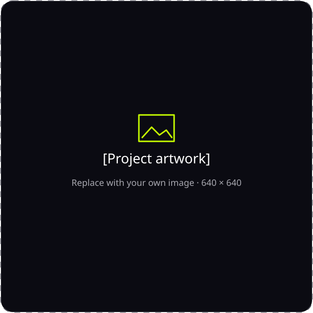
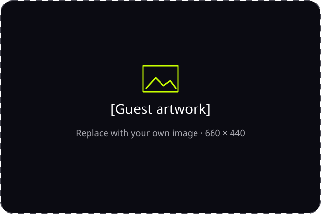

[Day Month Year] · [Time UTC]
[Highlights and key changes]
[Links and resources to share]
[Projects and presenters]
[Speaker and session title]
[What changed and why it matters.]
[A concise benefit for the audience.]
[An example, API, or workflow.]
[A verified improvement or limitation.]
pubky.org
[Explain the question these measurements answer.]
[Input] → [Analysis] → [Insight]
[XX%]
[Definition and scope]
[Public source · measured on date]

[One sentence introducing the project or live demo.]
[Presenter name]

[Talk subtitle or short introduction.]
[Guest name]
[Role · Organization]
[Related talk or project]
Click image to zoom and explore · Esc to close
[Confirmed releases and milestones]
[Work currently underway]
[Ideas and open questions]
[A concrete next step for the audience]
[Closing message or next call details]